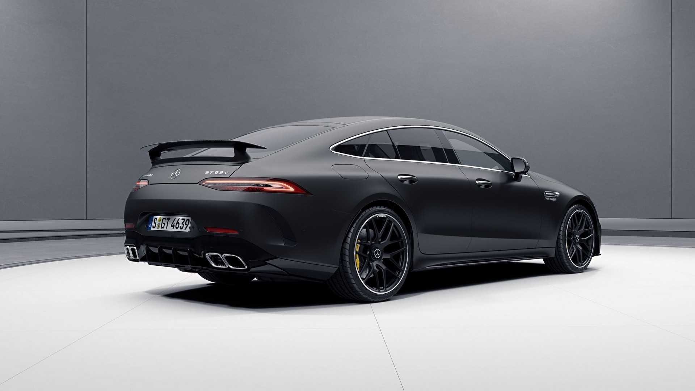
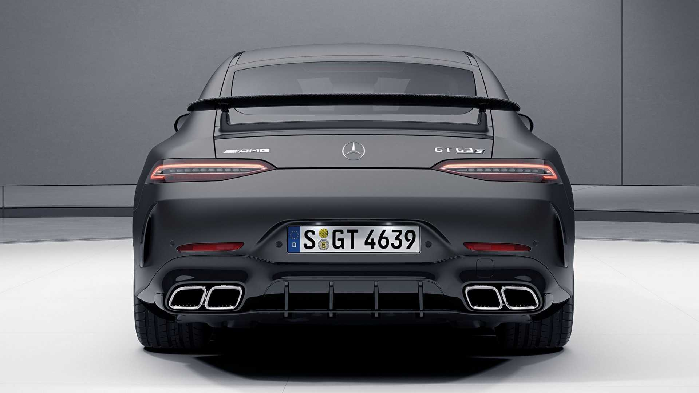
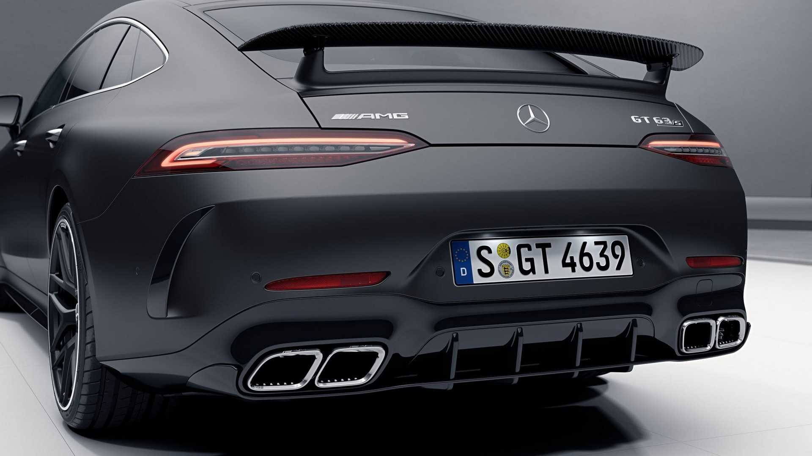
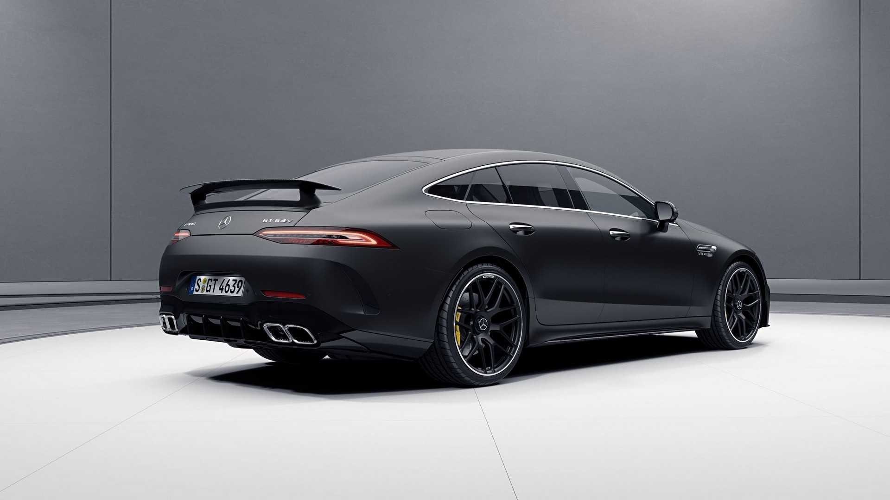
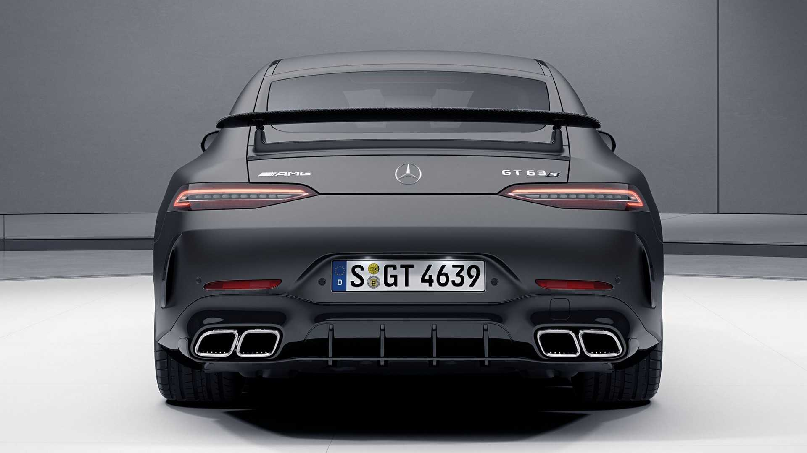
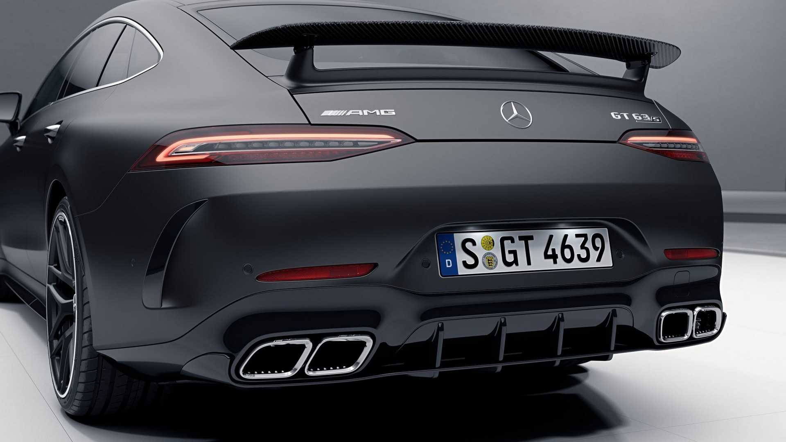

Mercedes-AMG GT 63 S
 





The GT63 S's twin-turbocharged 4.0-liter V-8 heart pounds out 630 horsepower and 664 pound-feet of torque. All that throbbing energy is routed through a nine-speed automatic and the AMG-tuned 4Matic all-wheel-drive system, which enables this Mercedes to bolt to 60 mph in 2.9 seconds. The quarter-mile is an 11.1-second 125-mph blur. AMG claims a top speed of 195 mph; it says as much on the tire-inflation sticker on the inside of the gas-filler flap that instructs you to increase the tire pressures for driving at speeds above 156 mph.
Those performance numbers put this four-door hatchback in league with the world's quickest supersedans: the BMW M5 Competition, the Porsche Panamera Turbo, and AMG's own E63 S sedan—though the M5 and E63 S begin to edge ahead at the quarter-mile mark. But the GT63 S tears those competitors to shreds when you put them all on a fast open racetrack.
BUY NOW